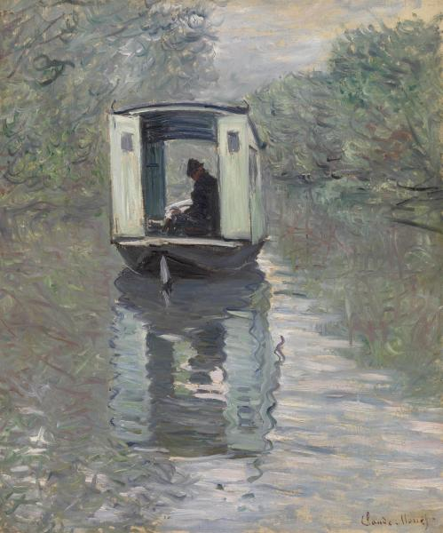

Claude Monet was a founder of French Impressionist painting, and the most consistent and prolific practitioner of the movement's philosophy of expressing one's perceptions before nature, especially as applied to plein-air landscape painting.[1][2] The term "Impressionism" is derived from the title of his painting Impression, soleil levant (Impression, Sunrise), which was exhibited in 1874 in the first of the independent exhibitions mounted by Monet and his associates as an alternative to the Salon de Paris.
Monet's ambition of documenting the French countryside led him to adopt a method of painting the same scene many times in order to capture the changing of light and the passing of the seasons. From 1883 Monet lived in Giverny, where he purchased a house and property, and began a vast landscaping project which included lily ponds that would become the subjects of his best-known works. In 1899 he began painting the water lilies, first in vertical views with a Japanese bridge as a central feature, and later in the series of large-scale paintings that was to occupy him continuously for the next 20 years of his life. test
